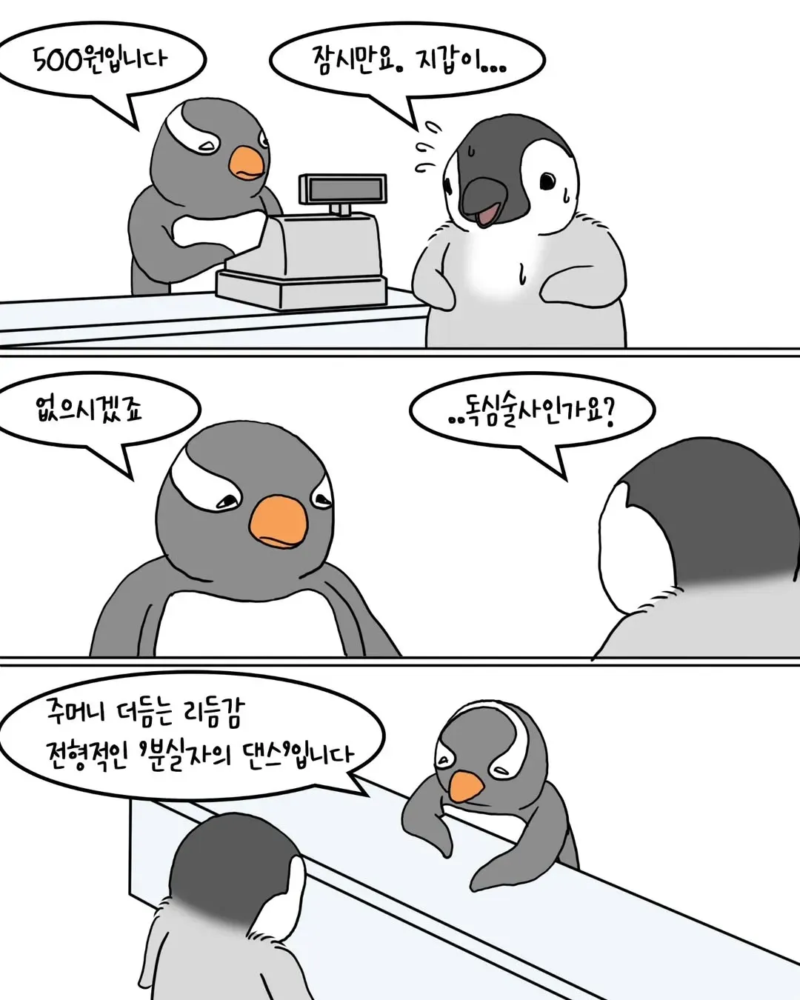
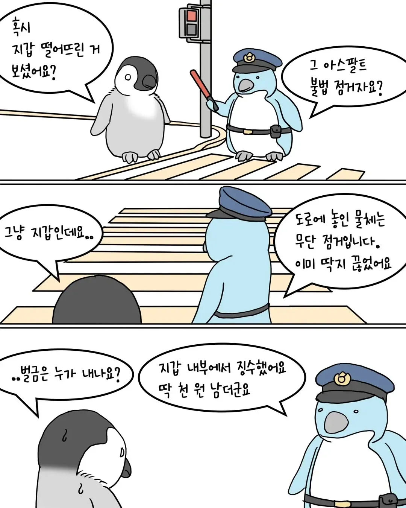
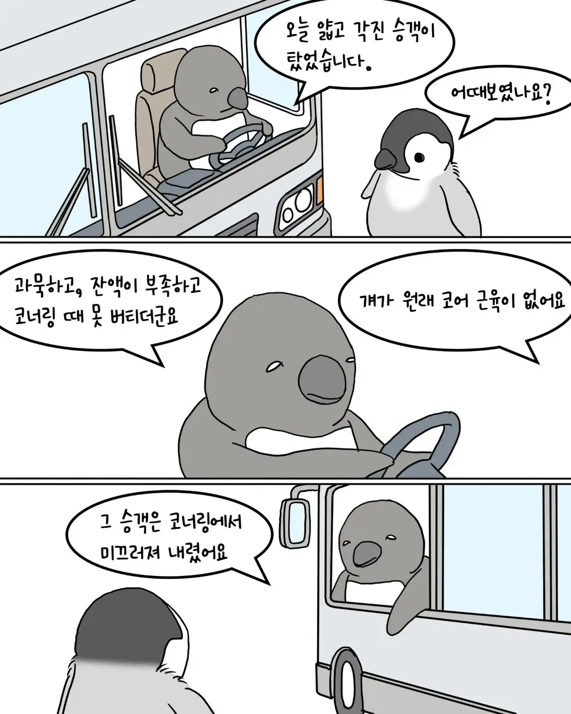
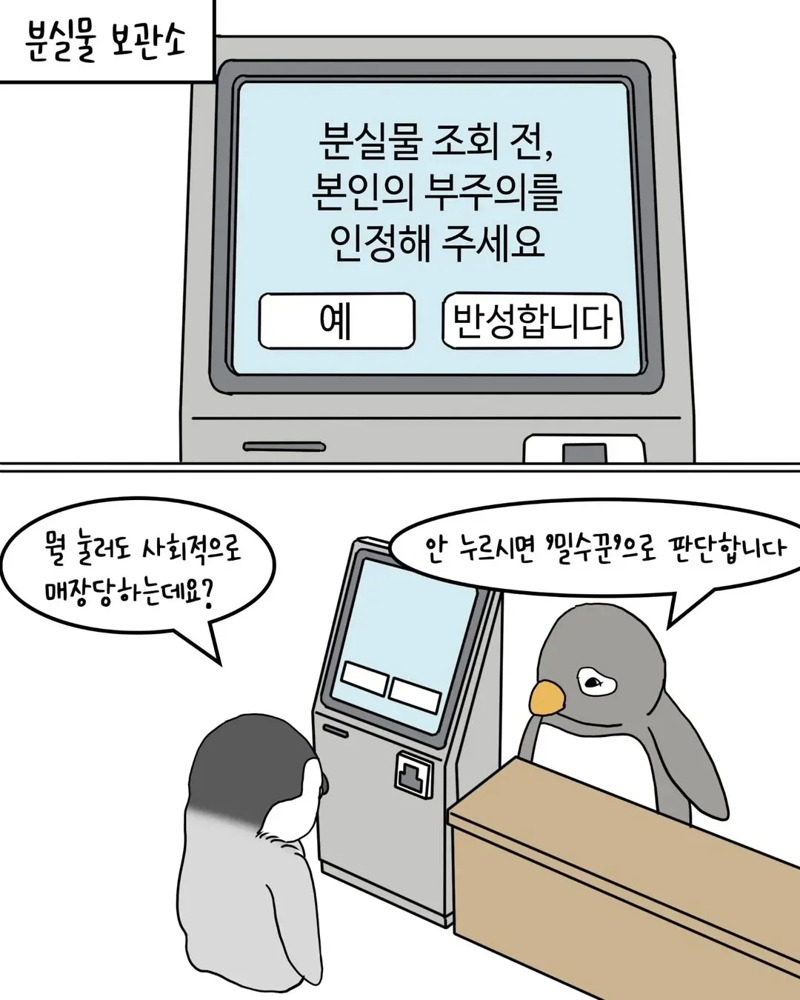
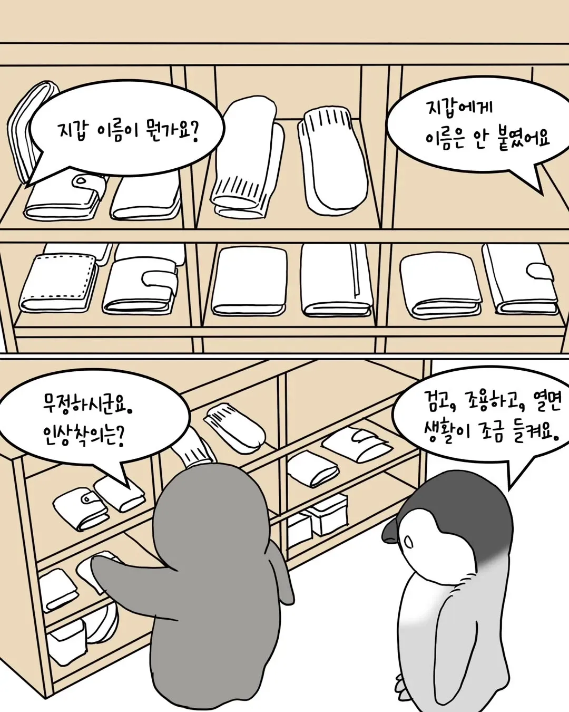
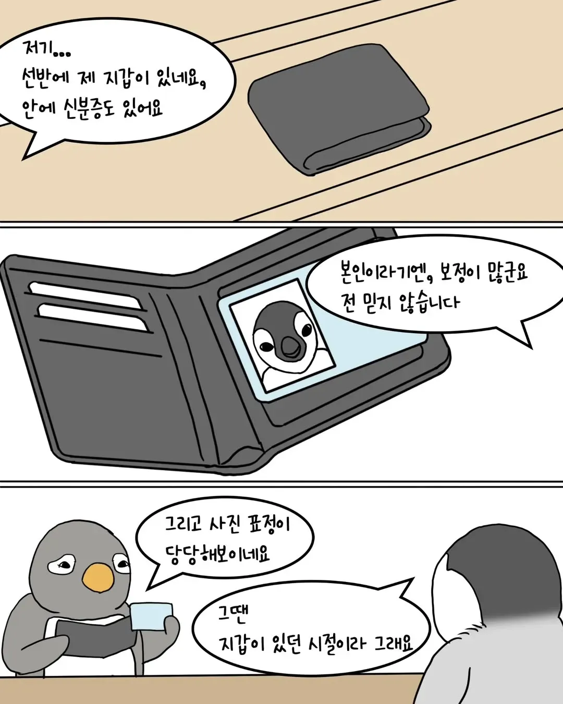
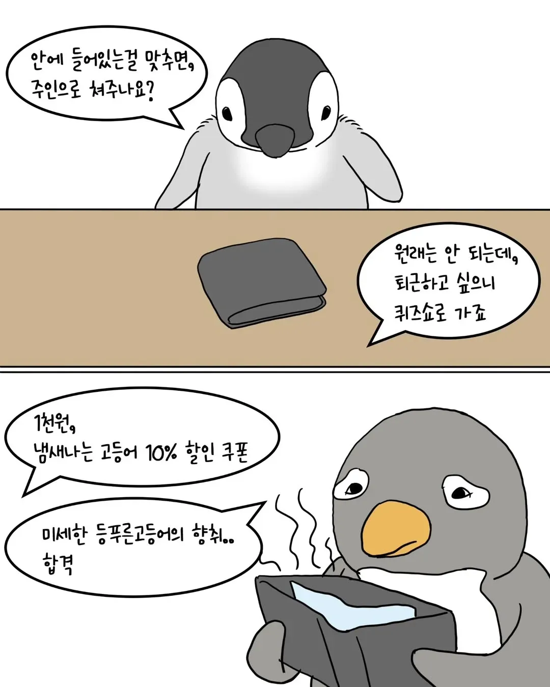
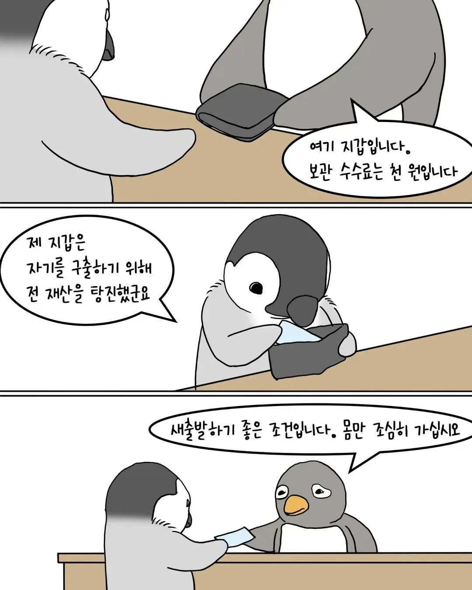

제목을알려줘
모리토툰
핸드폰에 대고 펭귄만화 보고싶다 이러면 폰이 음성 녹취해서 인스타 알고리즘으오 뜸
이거 리얼이죠
"개붕이들의 은밀하고 음탕한 사생활을 엿보고싶다"
감성 좋다
ㅋㅋ
이 만화는 단순한 일에도 개소리를 진지하게 하면서 진행하는 게 맛임ㅋㅋㅋㅋㅋㅋㅋ
이거볼때마다 버스씬 횡단보도씬 순서바뀌어있는거 킹받음
저거 골때리는 만화임 보는거 추천